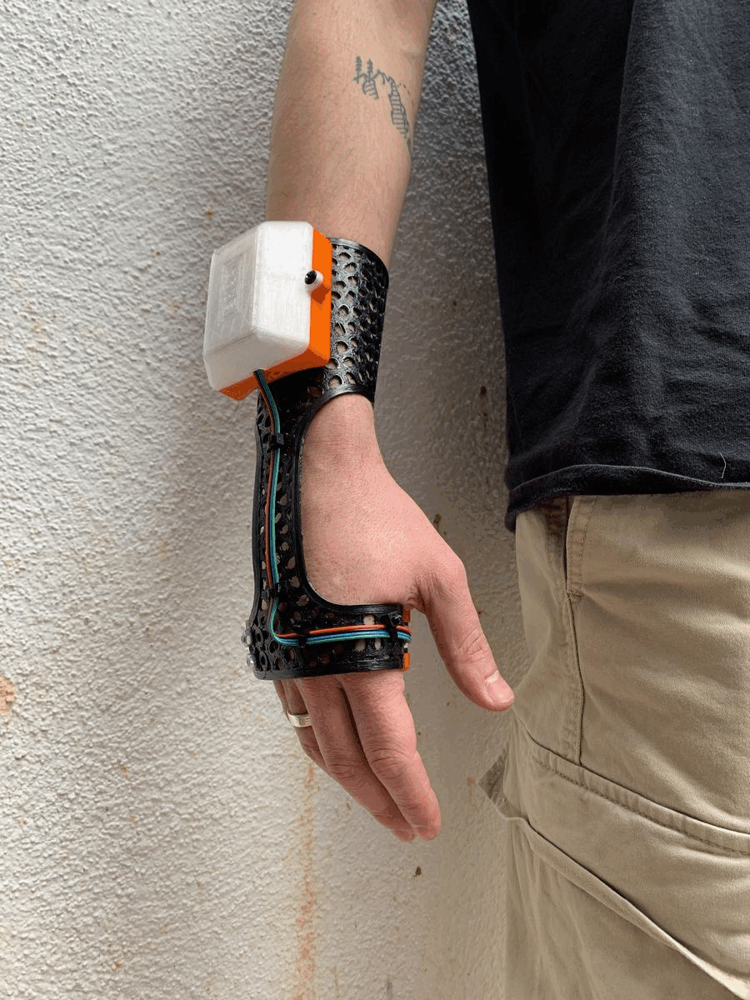

/SYNE_at_WAC
(07_may_2022)
During the second Microchallenge, Vikrant and I further explored the possibilities of wearables
and environmental sensing. We thought of a range of possible wearables to develop and we finally
developed a tool that converted light and colour into sound using P5.js. The aim of this tool was
to extend human capabilities of perception and complement the sight and touch senses. Thanks to
this wearable, you could get sounds from objects around while touching and seeing them. For a
visually impaired person, for instance, the tool could give them input from the colour of what
is around, a piece of information that generally they cannot get.
This arm wearable was a key point for the development of my project. Thanks to a talk with Jonathan
Minchin that brought me up the concept of “Synesthesia”, we called the project SYNE. The concept of
synesthesia represents the connection between senses and parts of the body, and that seemed a
fascinating topic to me. By connecting senses, we can get more information from the environment,
we can perceive in another way and extend human capabilities. We can become aware of things that
are not obvious and understand the physical reality from another point of view.

Around all these reflections I built the concept of my project. I wanted to create tools and
wearables with the aim of democratising senses, combining them to get more information from what
is around us.
.WAC_performance
Angel in collaboration with Vikrant prepared an exhibition for the WAC event during the Poblenou Open Day that used the tool Vikrant and I had created. It consisted of an art exhibition where Angel was painting live wearing the arm bracelet that transformed her moves, brushes strokes and light changes into sounds. It was a perfect example of how to use this tool in an artistic way, and how to make people perceive more from a painting. Normally one can see just the painting. Sometimes one can also see the live painting and the brush strokes of the artist. With the tool, one could also get specific sounds from the painting.
_________________________________________________________________________
/SFEEL_at_Montessori_school
(21_may_2022)
For the last Microchallenge, I teamed up with Pippa and Borka. We all had in mind to create some
tool that could get information from the environment. The concept moved around a gamified
audio-visual system, to capture the different perceptions of different environments. Capturing
movements, sounds and sensing of materials. Visualizing the movements of the body in space, and
the connection with different materials in the natural or built environment.
We agreed to give that tool the shape of a ball that could have all the sensors needed inside
(touch sensor, gyroscope, microphone, etc.). This form allowed us to move the device around in
a really interactive and intuitive way for any kind of public, from kids to the elderly. We also
included some materials to the sides in order to make people experiment with touch and, thanks to
the sensor, see in which one people are more interested.
The operation of this tool would be the following: Use the different sensors to get data from the
environment, then use Serial communication to send all the values to P5.js and finally create a
visual representation (either functional or abstract) of the data. Basically, we wanted to have
this visual input from movements, touches and sounds that we normally get from a camera but without
needing one. Also, we wanted to turn that data into something more artistic and less pragmatic.
.Montessori_school
Right after producing the ball, Pippa and Borka brought it to the Montessori school in Barcelona, to test it with kids and see how they interacted with it. They also wanted to analyse the movements of the ball in relation to the environment so as to create meaningful spaces for the students. They used the data collected from the sensors to visualise via P5.js the tendencies and paths followed by the kids and then analyse the meaning of each of them and how this could be translated into something meaningful when designing spaces.

_________________________________________________________________________
/SYNE_repo
Having already created some tools related to the same theme, I decided to create a repository
where I could have them all together so that anyone could get to know them and at the same time
download the files and the necessary information in case they wanted to reproduce them.
I used the SYNE concept as an umbrella for this whole project since in the end all these tools
are based on enhancing and highlighting the connection between senses, using the different
combinations to perceive more of the environment. SYNE aims to be a platform where anyone who
has more ideas that can contribute to this field can participate, either by using the tools
created, thinking of new purposes and ways of working with them or contributing more devices and
designs that help to empathise and work for this cause.
in this page, for the moment there are three projects: C2S (the arm wearable), SFEEL and PUZ(3D).
All three have a different purpose and a totally different way of working, but in each of them
they work with different senses and perceive things in a different way.
_________________________________________________________________________
/what_the_futures?!
(04_june_2022)
To finish with the interventions and designs made during this year, I am going to take advantage of
MDEFest to exhibit and test the gadgets and tools that I have developed this year. So far, my work
has been basically based on the creation of devices to experiment with the senses but unfortunately,
I haven’t been able to find a good moment to test them with an audience outside MDEF. I also wanted
to have all the devices developed so that the project would make more sense and could be understood
as a concept beyond a single tool.
During the What The Futures?! days, I have planned two activities that will allow me to make the
three tools in SYNE known: the first one will be an exhibition in Palo Alto where the devices will
be shown and there will be an explanation of how each of them works (through brochures, videos or
posters). There could be the possibility of a live explanation. The second activity will be a
collaboration with the Ateneu de Fabricació del Parc Tecnològic de Nou Barris where the devices
will be shown and they will also be able to be used and tested.
The audience for these interventions would be people related to digital fabrication, students, and
people interested in technology and social design. I could also gather children and other groups
who want to experiment with the devices.
Finally, with these interventions, I mainly want to get feedback on the tools, to see how people
feel when using them and if they are meaningful or not. I would also like to get ideas about
contexts and new applications for the devices, in which situations and with which groups they
could be used to make the most of them.
_________________________________________________________________________
/final_design_space
(04_june_2022)
Finally, this is the state of my Design Space after all this year. There, we can find the
different agents involved in this project on the multiscalar diagram, the communities mapped
and all the resources and interventions that I’ve been collecting and doing during this year.
I splitted the board into different topics to put a bit of order and easy finding each element.
I also have to say that having a Design Space like this hasn’t really helped me. To be honest,
I never found time to upload the Miro during the year because I was too busy doing other tasks
and interventions. Also, I don’t like the fact of having to zoom in and out, for me it’s not
visual and thus not practical.
On the other hand, I liked having a place to gather all the information, resources, explorations
and connections. I think that was a key point to understand the direction of the project.
This is still a work in progress so I will try to use some other method to have a Design Space
that fits better with my needs and my way of working.
_________________________________________________________________________
/SYNE's_alternative_present
(10_june_2022)
After completely defining my project and reflecting a lot on its purpose, I shaped an alternative
present that is built above the concepts of sense, empathy and innovation, fighting against the
isolation we suffer from our system, the devices that want to keep us far from the real world and
the conventions that tell us how we have to feel or perceive the environment. This project follows
the idea of democratising senses, adding capabilities to human perception, complementing the
information we normally get from what is around us and letting us experiment and play.
So, which is the alternative present I am creating with all this? I believe I’m making a present
where we give to our senses the value they have and appreciate them. Also, a present where we
take more into consideration the importance the physical world has, and where we leave our phones,
computers and TVs aside for a while to explore our surroundings and try to understand more about
the physicality of our planet. As I commented on the last reflection, I’m not an enthusiast of
the Metaverse because I don’t think this is going to help our world.
Going back to the ideas of My fight that we did at the beginning of the master, I like to think
that the alternative present that I am creating is a more empathetic present and that it can
somehow improve someone’s living conditions. During the Master’s course, I had a hard time
finding a social reason for the project, but I believe that this project has one and that the
tools I have created can be used in many ways for social purposes and that they can have a
positive impact on society. It’s all a matter of letting your imagination run wild and exploring
utilities.
Finally, I believe that with this project I have addressed several of the Weak Signals raised at
the beginning of the course such as Reconfigure Your Body, creating wearables to extend
capabilities, Technology For Equality, setting up this initiative, SYNE, to promote sensory
empathy and Human-Machine Creative Collaborations, designing tools that allow us to connect
our world with the digital one in an interactive and entertaining way.

Of course, all these ideas that I am grouping here are just hypotheses right now and I would
like to be able to demonstrate in a more pragmatic and empirical way how this project can really
contribute to making the world a better place. In any case, this has been my intention, and I
believe that with more work, experimentation and receiving feedback, this alternative present
would not have to be an alternative, it would be ours.
_________________________________________________________________________
/designing_myself_out
(10_june_2022)
As expected, SYNE is currently in an embryonic phase. The project has just been created and
the intention of the project has been defined. During the weeks of MDEFest, I foresee that a
community will start to build up around the project, of people interested in this field and in
the creation of sensory devices with digital fabrication. Even so, it is interesting to consider
how this project could be scaled up, to see where and in what ways it could go and in what
contexts it could be most useful.
In the penultimate class of Design Studio, Clément Rames gave us an explanation of the procedure
he followed to scale his project AQUÍ. Logically, each project is different and the way of
externalising it depends a lot on how it is developed and the theme it deals with. In any case,
he made us ask ourselves first of all the 5Ws: why, what, who, where and when.
.why
For people to feel and perceive more of the environment. For people to explore, play and empathise with their senses. Against digital realities and devices that isolate us from the real world.
.why
Create and collect tools to communicate with the environment and feel with the senses. Find spaces and contexts to use the tools in functional or artistic ways.
.who
Wide range. The tools can be used by anyone, however, I think the people interested would be young people, students, designers, artists, people involved in digital fabrication, technology enthusiasts and collectives who think these tools could be useful for them (e.g. visually impaired people).
.where
This is not a project that has to be established in a specific place. However, since I live in Barcelona and there is a lot of movement around digital fabrication, and design for social purposes, I think it would be a good place to start.
.when
Digital realities are already in the process of development. In my opinion, these tools should scale at the same time, empowering physical realities in parallel to the technologies that want us to be isolated from them.
In order to understand it better, I have developed a diagram of the possible growth paths of this project answering the how to reach my purpose.
.how
_________________________________________________________________________
/final_reflections
(16_june_2022)
To end this thesis, I would like to reflect on a few issues that I believe are significant and
that are the pillars of everything I have been building during this course in relation to MDEF
and my project. Undoubtedly, it has been a year in which many things have happened and I would
like to comment on them separately.
.MDEF
This master’s degree has a lot to talk about. Honestly, when I started MDEF I didn’t imagine that it would be such a complete and intense master’s degree at the same time. The amount of topics covered in nine months is overwhelming, but at the same time, it allows you to learn about a huge number of different fields, all related in some way to the future and its possibilities, which you can focus on and specialise in if you want to. It also deals with issues with a social background that affects the society today with the Atlas of Weak Signals and always encourages collaboration and active participation with the communities. You could say that this master’s degree is mind-opening.
In addition, it offers an admirable amount of resources both in the first term with experts in each subject and in the second and third terms, with the FabLab facilities and its professionals. With all these sources of knowledge and the machines and materials available in the Lab, projects can be carried out with much more body and meaning. The possibilities are really endless.
In any case, one of the factors that I have enjoyed most about this master’s degree has undoubtedly been the company and collaboration with my classmates. I mentioned this before, but the fact that we all come from different places and backgrounds makes us complement each other much more when it comes to developing projects and coming up with solutions. The amount of things I have learned from my fellow students is simply unquantifiable, not only on a technical level but also on a personal level.
On the other side of the coin, this is a master’s that takes up a lot of time and a lot of mental space. There are constant deliveries from Design Studio, Fab Academy and the other courses during the different trimesters, where you have to reflect and often also be creative. Unfortunately, combining all this work with interacting with communities, at least for me, is a very complicated task. We were told many times that we had to go out into the streets, get into the communities and work with them. But, how can I look for a community if I don’t even know what my project is about? How am I going to get into a community if I can’t offer them constancy and dedication? In my opinion, this process required more time.
Another thing that confused me a lot was the structure of the master’s in some aspects. The fact that we had to choose a theme in the second week of the master’s course and work based on this theme throughout the course seemed a bit premature to me. We hadn’t done any course yet and we hadn’t practically known the FabLab, and I think that all this has to be taken into account when developing a project that makes sense from start to finish. Otherwise, one ends up making interventions that perhaps don’t make much sense in terms of the final project. I understand that in the end everything is created based on personal interests and that Design Space can always evolve, but at the same time, I think it’s important to have foundations when making interventions, at least if we want them to be relevant.
Finally, I would like to say that, although I had moments of breakdown and was overwhelmed by all the work that was going on (apart from other personal issues), this master’s degree has given me a lot of positive things and has made me grow as a person and as a maker. I’ve learned about many different subjects, I’ve started to document everything I do, I’ve used a thousand different technologies and manufacturing processes, I’ve designed all kinds of objects. All this will be very useful for the kind of professional career I want to take, related to FabLabs, social projects and design.
.MDEF
The project has also been a topic that has given me a lot to reflect on during this master’s degree. The choice of the topic was key from the beginning, and yet it was one of the most complicated and relevant decisions, since, in the end, everything was going to be related to it. In my case, it was a bit of a tough process because I had a hard time finding the key to what I wanted to do. In fact, it wasn’t until the third Term that I decided on the objectives and the will of my project, finding the concept that would make sense of it all.
My process for choosing the theme was as follows: I started with the idea of working in the rural world and using digital fabrication to reuse tools and machines. However, this idea was short-lived and I soon changed to the idea of designing wearables and prosthetics using topological optimisation, also adding sensors to interact with the environment. I liked the concept of Cyborg and using technology to promote equal opportunities.
At the end of the first Term, I had the second breakdown where I wanted to completely change the direction of the project, to focus on giving a second life to obsolete objects and using the FabLabs to redesign and transform household appliances and furniture found in the trash. Again, in the middle of the second Term, I had a breakdown and changed the theme back to wearables and environmental sensing. This was the last change and from then on I simply set out to better develop the concept and purpose of the tools I wanted to create.
Jana and Roger told us in class about some of the processes that are followed when developing a project. From a linear process where everything is formed from an idea and evolves, to a chaotic process of probing where different inputs and related topics are sought. In my case, I think the diagram of the evolution of my project would be something like this:
Although the path has been complicated, I think I have achieved the goal I wanted. I have been able to develop a functional and at the same time artistic project that also has a social character and uses digital fabrication as a means of production, which makes it replicable. I have been able to use many different manufacturing technologies, I have used electronics and I have even been introduced to P5.js with interface design. It’s certainly quite a complete project that can have a thousand different functionalities and generate an alternative present, although it’s obviously still in its embryonic stage.
Even so, the worst thing for me is that I have not been able to form a community around this project, at least not during this course. It is true that I would have liked to be able to interact with more people outside the master’s and to collaborate with people interested in this topic or who could benefit from it. I’m looking forward to receiving feedback from the users of the tools and to knowing a bit more about people’s perceptions of my designs. And, obviously, I want them to be useful and make someone’s life better, that would be my main goal.